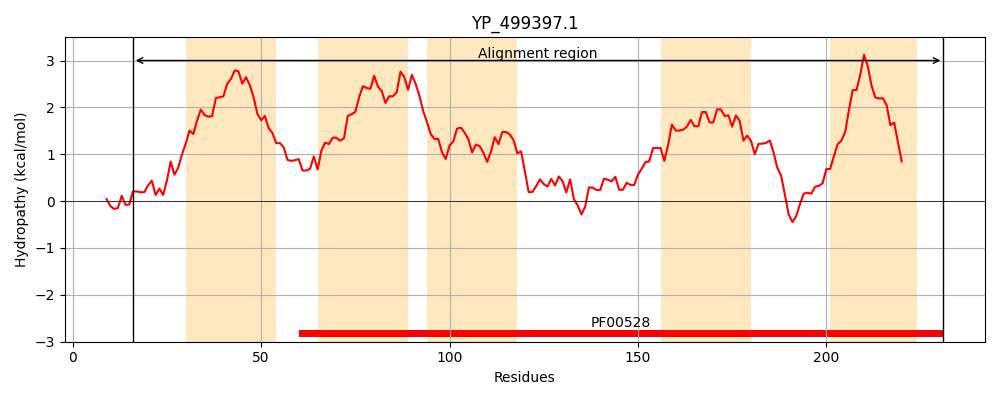
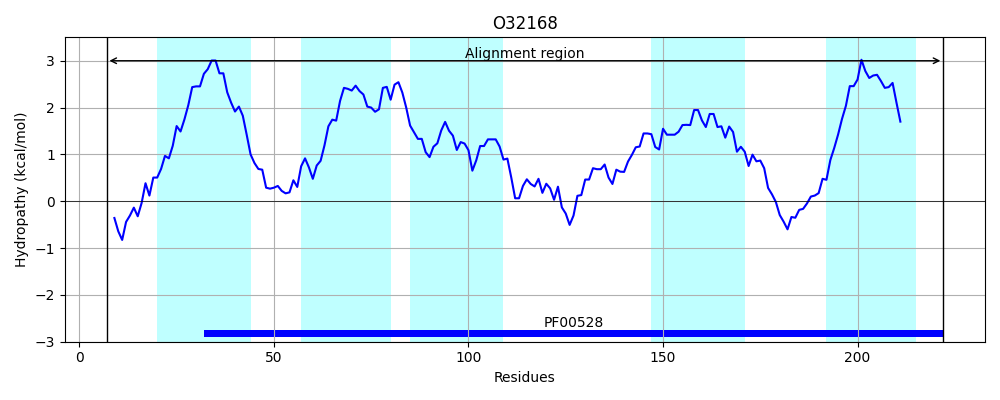
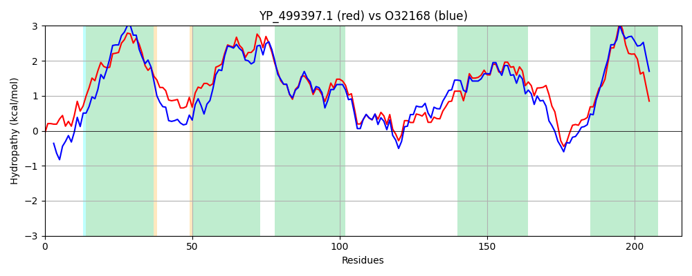

Hit Accession: O32168
Hit TCID: 3.A.1.24.2
Hit Description: gnl|BL_ORD_ID|7093 gnl|TC-DB|O32168|3.A.1.24.2 MetP protein - Bacillus subtilis subsp. subtilis str. 168.
Mach Len: 216
e:0.000000
Query TMS Count : 5
Hit TMS Count: 5
TMS-Overlap Score: 6.100000
Predicted Substrates:CHEBI:45761;L-methionine (R)-S-oxide residue, CHEBI:6829;methionine
BLAST Alignment:
Score: 723 , Bit scores: 283 bits, E-value: 1.8e-97, Alignment length: 216, Percentage identity: 64
Query: 16 PNIQWPEVWTAIVETLYMTVVSTIFAFILGLILGVLLFLSAKGKSIGARLFYSIVSFIVNLFRAIPFIILILLLIPFTSLILGTISGPTGALPALIIGAAPFYARLVEIAFKEIDKGVIEAAWSMGANTWTVIRKVLLPEAMPALVSGITVTAIALVGSTAVAGVIGAGGLGNLAYLTGFTRNQNDVILVSTVFILIIVFIIQFIGDWLTNKLDKR 231
PN+ E+W A ETLYMT++S +FAF++G+ILG+LLFL++KG + S+++ +VN+FR+IPF+ILI+LL+ FT ++GTI GP ALPAL+IG+APFYARLVEIA +E+DKGVIEAA SMGA T T+I KVL+PE+MPAL+SGITVTAIAL+GSTA+AG IG+GGLGNLAY+ G+ N DV V+TVFILIIVFIIQ IGD +TN +DKR
Sbjct: 7 PNVDLTELWNATYETLYMTLISLLFAFVIGVILGLLLFLTSKGSLWQNKAVNSVIAAVVNIFRSIPFLILIILLLGFTKFLVGTILGPNAALPALVIGSAPFYARLVEIALREVDKGVIEAAKSMGAKTSTIIFKVLIPESMPALISGITVTAIALIGSTAIAGAIGSGGLGNLAYVEGYQSNNADVTFVATVFILIIVFIIQIIGDLITNIIDKR 222 | Protein Hydropathy Plots: |
|---|
|  |  |
Pairwise Alignment-Hydropathy Plot:
|
|---|
|  |